Hello! This is my text corpora analysis, featuring the complete scripts of all the Earthbound/Mother games.
I personally chose this series for two main reasons. First, it's one of my favorite video game franchises of all time, and is very important to my own understanding and interpretation of stories in video games. Second, and perhaps more pertinently, all three entries have very different sensibilities about what type of story they want to convey.
From the outset, I'd say the series gets more involved and serious about its story as the games progress, so I hope to explore some of those concepts in this analysis.
Now, before we get started, please keep in mind that this series has two different names depending on the release region. In Japan, it's known as Mother, while outside of that, it's Earthbound, This mainly matters because Mother 3 never got an official english release. The analyzed text is from the fan translation, as that's the way I and many others experienced it.
So, for clarity, Mother 1 is the same thing as Earthbound: Beginnings, and Mother 2 is the same as Earthbound. For the purposes of this analysis, I will be using the japanese names of Mother 1, 2, and 3 for consistency's sake.
Finally, credit to broomweed, TIDQ, and spookychee for transcribing and uploading these scripts, as well as Starmen.net and GameFAQs for continuing to host them.
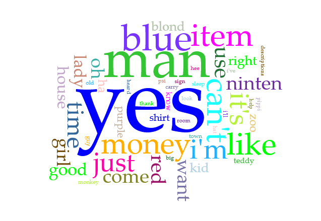
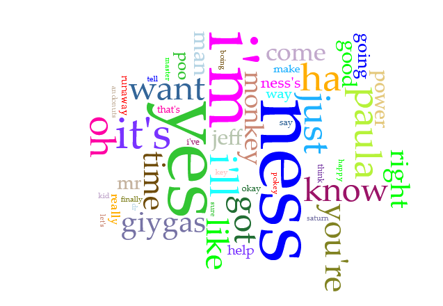
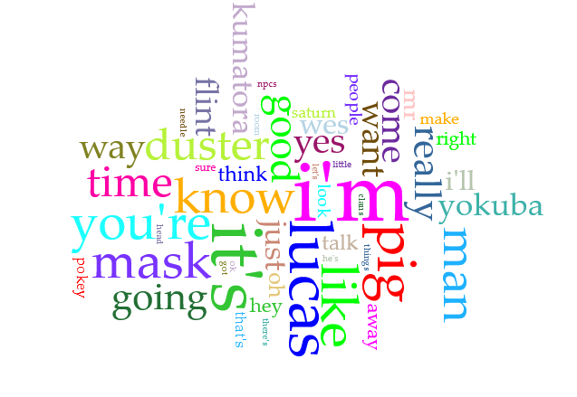
These are the word clouds for each game. Definitely some interesting trends to analyze!
First, however, I believe it's important to note how formatting affects this analysis. Mother 1's (M1) script was directly scraped from the game, slightly edited to add character names instead of coding logic, but it's the most "raw" of all the scripts. It also does not try to give context to what's happening during or around the dialogue, as that would be shown in-game and not directly told.
Mother 2's (M2) script is similar in that it's directly pulled from the game with little direct context beyond the current speaker, but it's formatted in a far more readable way. It also removes most unimportant dialogue, ignoring NPCs with only a single line in favor of only documenting the important, story progressing ones. Similar to Mother 1, it forgoes describing the current setting or actions characters take, only caring about written dialogue.
Mother 3 (M3), meanwhile, is written closer to a play, with stage instructions inflating the word count to more than both Mother 1 and 2 combined. This script was also translated by a single person (and a fan at that!), as opposed to Mother 1 and 2 which were pulled from the official translations made by workers at Nintendo. This also means it's slightly different from the playable fan translation, being a bit less localized (aka, it reads more like a direct translation instead of being adapted for cultural differences), and it features a few character names in anglicized japanese instead of their more thematic localized ones.
Now, of these three word clouds, I find it interesting how large and important Ness and Lucas are in their respective games, while Ninten is brought up far less. Despite containing a roughly similar number of words (18k for M1, 17k for M2), Ninten is only brought up by name 46 times. Ness, by contrast, is directly mentioned 164 times, being the most frequent word in the corpus. This implies Ness is a far more important character on an inherent level compared to Ninten, who would occupy a role closer to a self-insert. Of course, all of this is ignoring Lucas, who is mentioned 199 times throughout the Mother 3 script, showing just how important they are to the story of that game.
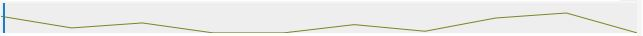
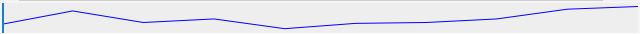
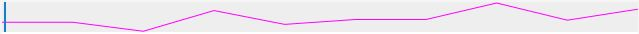
From these graphs, you can see how Ninten and Ness are generally more concentrated near the beginning and end of their scripts, being directly named more as the story is building up and reaching it's climax, while Lucas is less important early on (especially when he's not mentioned at all before the first spike, likely due to Chapter 3 focusing on entirely different characters), before eventually becoming a central character around 1/3 of the way through.
I also find the prevalence of "yes" in M1 and M2 fascinating, as it really demonstrates how formatting affects these games. Since they're direct text dumps, the player is given the option many times throughout the game to agree or disagree with something, usually when it's gameplay related. Since M3 is formatted closer to a play, however, it can use alternate wording and only present the choice for truly important moments, making it a far less frequent word in that case.
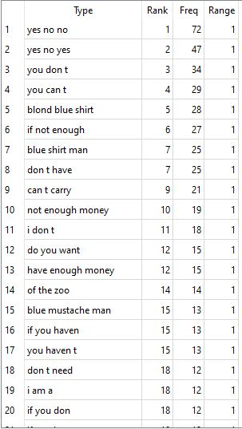
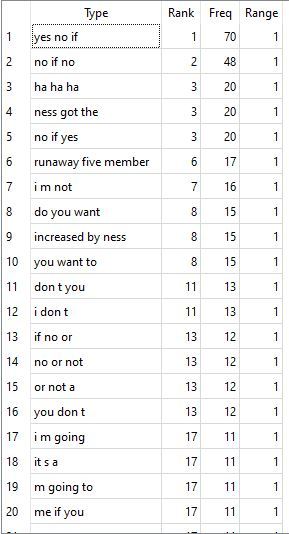
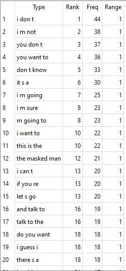
From the size 3 N-Grams, we can see a few interesting phrases in each game's top 20. Many are related to gameplay mechanics or dialogue trees (at least for Mother 1 and 2), but you can still see trends of important or frequent characters popping up many times throughout the scripts.
I find that generally, Mother 1 is more gameplay related, Mother 2 is more story/character related, and Mother 3 is more dialogue related, at least for this size of n-gram. This does track with what each script is going for though! I just find it interesting how that peaks through even when analyzed through a program like this.
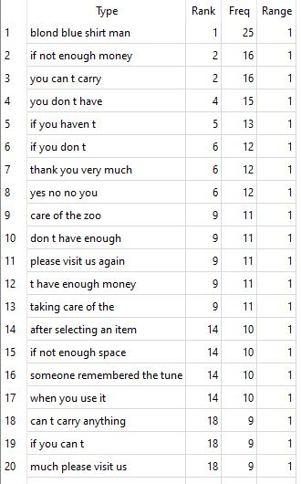
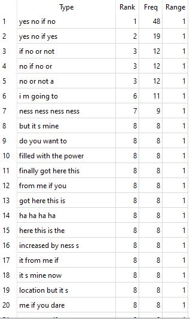
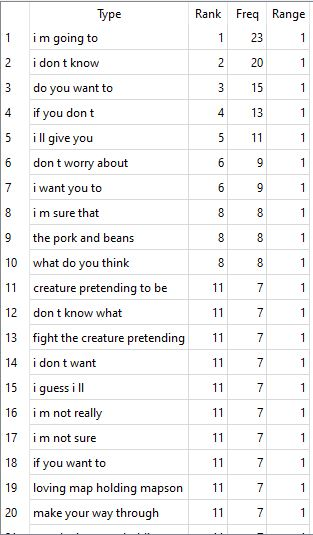
Generally this is in line with the 3 token n-grams, with Mother 2 filtering out more of the gameplay focused strings in favor of repeated types of dialogue. Mother 1 and 3 continue the same trends as the previous size.
There are some interesting dialogue quirks that get some repeated phrases included artifically, mainly for Mother 2. There are multiple characters with long laughs, which includes "ha ha ha ha" within it more than once. Similarly, the string going "ness ness ness ness" is here almost entirely due to the final boss, which creepily repeats Ness's name about a dozen times. This shows a weakness of analyzing text like this, as these phrases aren't actually used very much outside of a few (or even just one) specific scenarios.
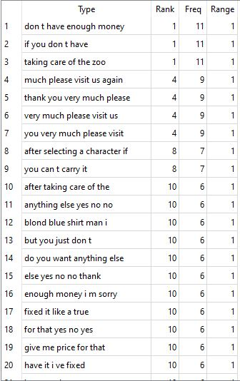
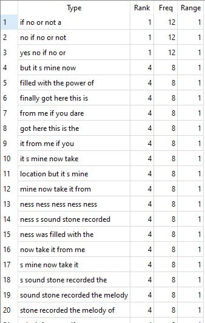
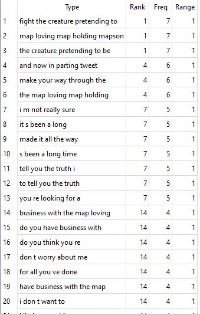
More of the same here, though Mother 1 is escaping gameplay dialogue now. Instead, dialogue related to paying for things is taking over the majority of its snippets, which is interesting. Mother 2 now gets dialogue centered around the Eight Melodies and Sound Stone, which lines up with the frequency! Finally, Mother 3 has some reused phrases that are repeated a few times throughout the game, but it's become focused on the Map Loving Map Holding Mapson, who's long name and consistent help to Lucas and Co. earn him multiple spots in the top 20 of size 5 n-grams.
The n-grams continue to confirm what we already knew about these scripts and their tendencies, but it's good to know they don't get too crazy when looking for high token phrases.
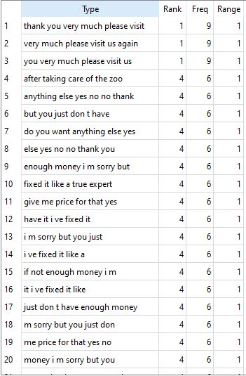
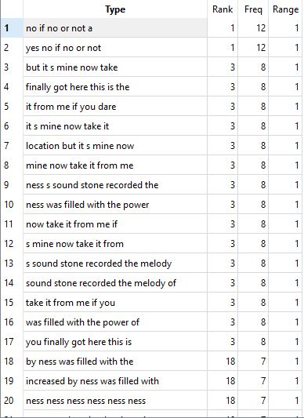
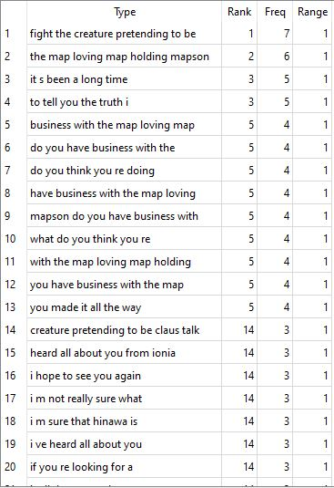
Unfortunately for me, the final recorded n-grams are a bit of an anti-climax. Mother 1 continues its payment fixation, Mother 2 loves the Eight Melodies and associated dialogues, and Mother 3 can't help but fawn over Mapson's humorously long title.
I suppose it's on brand for this series to end like this, however. They were always about childlike whimsy and hope for the world. Even the most serious entry in Mother 3 is ridiculously silly and fun, enough so that it kinda ruined the results of my n-gram analysis!
So perhaps that's the takeaway from this whole analysis. That, while they each have very different approaches towards reaching the end goal, every game wants something similar. They want to talk about growing up, getting responsibilities while overcoming great obstacles, but still encourage you to be yourself, never giving up on the silliness that makes life worth living.
Okay, maybe it's not as poetic as that, but would it have been particularly interesting if a random, common phrase said by different characters with no relations to each other was the most common? No! Instead, we got to learn about The Map Loving Map Holding Mapson, and I think that's wonderful.